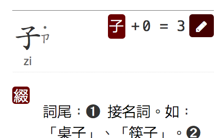

Tag strategies
First we look at some general patterns for markup that are defined as valid in HTML. This is about how much markup you need, and the order in which marked up items appear.
Interleaved markup
In the previous example we used all possible tags. If you feel that this makes it harder to read the source code and to create things manually, then the HTML5 specification allows a number of alternative approaches. Both of the following alternatives are also valid. Note that the basic pattern here is rb rt rb rt ..., which we'll refer to as interleaved.
<p>これは<ruby>日<rt>に</rt>本<rt>ほん</rt>語<rt>ご</rt></ruby>です。</p>
<p>これは<ruby><rb>日<rt>に<rb>本<rt>ほん<rb>語<rt>ご</ruby>です。</p>
The first of the above examples drops the rb tag, and is the style you will see in the examples in the HTML5 specification. The lower example drops the closing tags, resulting in the same simplification of markup, but making the rb content directly selectable for styling or scripting.
Note, by the way, that you can no longer allow extra spaces to appear inside the ruby element, since they will be produced in the output. You need to take care to ensure that your editor doesn't split the sequence across two or more lines while applying automatic source formatting!
HTML allows you to style rb content in a number of ways. One way is to style the ruby element, then style the rt tags differently. Another is to surround the rb content with a span element.
Note that if the rb element is not tagged, it is more difficult to apply certain styling effects, possibly at a later date.
For example, research for elementary and junior-high students by the Japanese government in 2010 indicated that 0.2% of them have difficulty reading hiragana, and 6.9% have difficulty with kanji. Kanji dyslexia is related to difficulty in visual recognition of complex drawings, and therefore adding ruby adds complexity and makes them even harder to read. The researchers tried several methods to improve readability and found that the best method was to replace kanji with hiragana (ie. the rt text). Only if the rb content is identified can a user or alternate style sheet can replace kanji with its annotation without changing markup.
Tabular markup
There is still another way of arranging the components of a ruby element. You can group all the ruby bases together and follow them with all the ruby text elements. The basic pattern here, then, is rb rb rt rt ..., which we'll refer to as tabular.
An advantage to this approach is that if you decide you want to style the ruby so that it follows the base inline then you can keep together all the annotations for a given word. (Inline styling can be useful in space-constrained situations, where it would be too difficult to read small ruby characters.)
For example, if we use CSS to make the ruby text from the example above inline, we will see something like 日(に)本(ほん)語(ご). Often, it would be preferable to see 日本語(にほんご), without losing the mapping of ruby text to individual base characters. To achieve that, you can use the different approach shown below.
<p>これは<ruby><rb>日<rb>本<rb>語<rtc><rt>に<rt>ほん<rt>ご</rtc></ruby>です。</p>
Each ruby base is now mapped to the same ruby text, but the order of characters has changed to be more like a tabular effect.
Note that you wouldn't want to produce a similar effect by using group ruby, since you would normally expect the annotated content to wrap at the end of a line in the middle of an annotated word, but group ruby would prevent that.
Producing single-sided ruby
This section tells you how to produce various types of single-sided ruby annotation, and various aspects to bear in mind.
Mono vs. group vs. jukugo
The most common approach to ruby is to associate each base character with a single annotation, ie. mono ruby. All of the preceding examples illustrate mono ruby.
Mono ruby makes it easy to handle line breaks when justifying text, since the browser can split the line between any two base characters. Group ruby, on the other hand, assigns a single annotation to a sequence of base characters, and these base characters can no longer be split at the end of a line.
Situations where group ruby is appropriate include sequences of base characters that are associated with a single phonetic sound, or semantic ruby that applies to a whole word, or even a phrase.
To mark up group ruby you simply put more than one base character in the rb tag. For example, note how the markup for the word 今日 below (a phonetically indivisible word) differs from that of 会議.
<p><ruby><rb>今日<rt>きょう</ruby>の<ruby><rb>会<rt>かい<rb>議<rt>ぎ</ruby>。</p>
Each ruby base is now mapped to the same ruby text, but the order of characters has changed to be more like a tabular effect.
If you want to apply jukugo rules to your ruby text, you should just mark it up in the same way as mono ruby. You don't need to worry about the overlaps in the markup. That will be taken care of by CSS. The markup simply estabishes the correspondances between base characters and annotations.
Bopomofo
Bopomofo, or zhuyin fuhao, characters used in ruby with Traditional Chinese characters are marked up in exactly the same way as mono ruby. No special markup is needed.

The markup merely establishes the relationships between the base characters and the ruby text. The positioning of the phonetic characters and tone marks to the right of the base character is achieved by styling. For example, the markup needed for the characters just above is as follows.
<ruby><rb>第<rt>ㄉㄧˋ<rb>十<rt>ㄕˊ<rb>屆<rt>ㄐㄧㄝˋ</ruby>
Gaps in the sequence
Occasionally you may want to mark up a sequence of base characters as a single ruby element when there is a non-kanji character in the middle of a word. Here is an example.
One way to do this would be to use an empty rt element after り.
<ruby><rb>振<rt>ふ<rb>り<rt><rb>仮<rt>が<rb>名<rt>な</ruby>
However, if you were to inline the annotation, it would now be missing a character. You would see 振り仮名（ふがな）, instead of 振り仮名（ふりがな）. An alternative would be to repeat the character in both the base and ruby text, and rely on CSS to automatically hide the annotation when both base and ruby text are the same.
<ruby><rb>振<rt>ふ<rb>り<rt>り<rb>仮<rt>が<rb>名<rt>な</ruby>
How long should my ruby element be?
Given the ability to string multiple ruby pairings together in a single ruby element, the question arises as to what is the optimal number of pairings within any given ruby element.
You are free to decide this for yourself. If you want to use a jukugo ruby arrangement, however, you will need to establish clear word boundaries, so that annotations don't overlap adjacent words. This may also be important if you want to produce inline versions of your annotations, and you have used the tabular markup approach. That will ensure that the annotations appear after the words that they refer to. In these cases, you should start a new ruby element for each word.
Here is an example where compound nouns are annotated in separate ruby elements.
<p><ruby><rb>常<rt>じょう<rb>用<rt>よう</ruby><ruby><rb>漢<rt>かん<rb>字<rt>じ<ruby><rb>表<rt>ひょう</ruby></p>
If you wanted inlined annotations appear on a word by word basis you would want to code using the tabular method. That would look like this.
<p><ruby><rb>常<rb>用<rtc><rt>じょう<rt>よう</rtc></ruby><ruby><rb>漢<rb>字<rtc><rt>かん<rt>じ</rtc><ruby><rb>表<rt>ひょう</ruby></p>
Producing double-sided ruby
Occasionally it is necessary to run annotations on both sides of the base text. This would be the case where there is both a phonetic and a semantic annotation, or where there are two types of phonetic annotation (such as bopomofo and pinyin as shown in the top left of the following screen grab).

Using mono ruby only
Let's look at a Japanese example where there is a regular one-to-one correspondance between the base characters and the associated ruby text. The cleanest approach would be to use the tabular markup, but with two rtc elements.
<ruby><rb>東</rb><rb>南</rb>
<rtc><rt>とう<rt>なん</rtc>
<rtc><rt>tou<rt>nan</rtc></ruby>の方角
By the way the example above is laid out, you can see that the related components are mapped together in a table-like way.
An alternative is to nest the ruby elements. This would yield code like the following.
<ruby><ruby>東<rt>とう</rt></ruby><rt>tou</rt>
<ruby>南<rt>なん</rt></ruby><rt>nan</rt></ruby>の方角
Using mono and group ruby together
When using double-sided ruby in Japanese you are probably more likely to need to combine mono ruby phonetics with group ruby semantics for a given word. This is also possible.
When using the tabular approach, you can just use a single span in the rtc element containing the group ruby.
<ruby><rb>東</rb><rb>南</rb>
<rtc><rt>とう<rt>なん</rtc>
<rtc>たつみ</rtc></ruby>の方角
When nesting, you bring more into the first ruby element.
<ruby><ruby>東<rt>とう</rt>南<rt>なん</rt></ruby>
<rt>たつみ</rt></ruby>の方角
Partially overlapping ruby
In some cases the annotation on one side of the base characters maps to a different set of characters than the annotation on the other side. For example.

This is relatively straightforward when using the tabular approach, since it allows you to leave blank rt elements where needed.
<ruby><rb>護</rb><rb>れ</rb>
<rtc><rt>まも<rt></rt></rtc>
<rtc>プロテゴ</rtc></ruby>の方角
When nesting, you can also achieve the effect required for the example above, but if group ruby were supposed to be on the top you would have to reverse the normal positions of the annotations so that you could make the markup work. If the two annotations started and ended at different places, this would be much more difficult to manage.
<ruby><ruby><rb>護</rb><rt>まも</rt><rb>れ</rb><rt></rt></ruby>
<rt>プロテゴ</rt></ruby>！
Further reading
-
Related links, Authoring HTML & CSS